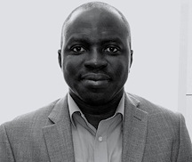

<section class="py-24 relative">
    <div class="w-full max-w-4xl px-4 md:px-5 lg:px-5 mx-auto">
<h1 class="text-primary-600 text-4xl font-bold font-manrope leading-normal lg:text-start text-center">ABOUT THE CORPORATE AGRIFOOD NET ZERO PROJECT</h1>
<p class="text-gray-500 text-base font-normal leading-relaxed lg:text-start text-center">Achieving the environmental goals in the corporate agrifood and business sector requires transparent and easily accessible data on corporate targets, standards and reporting initiatives. This important knowledge is often stored inaccessible databases and corporate reports or behind paywalls.  The goal of our work is to make this data widely accessible for informed decision-making by policymakers, consumers, suppliers and other relevant stakeholders.
 </p>
<h3 class="mt-8 mb-4 text-primary-600 text-3xl font-bold font-manrope leading-normal lg:text-start text-center">Team</h3>


<p class="text-praimry-600 text-base font-normal leading-relaxed lg:text-start text-center">Albert Boaitey Ph.D</p>
<p class="text-gray-500 text-base font-normal leading-relaxed lg:text-start text-center">Lead Corporate Agrifood Net Zero Project</p>
<p class="text-gray-500 text-base font-normal leading-relaxed lg:text-start text-center">Albert is a Lead for the Corporate Agrifood Net Zero Project. He a Lecturer in Global Agri-Food Supply Chains. He holds a PhD in Agricultural and Resource Economics from the University of Alberta, Canada. His work focusses on agribusiness sustainability transition, food marketing and supply chains.
 </p>
 
<p class="mt-4">Digvijaysingh Raut</p>
<p class="text-gray-500 text-base font-normal leading-relaxed lg:text-start text-center">Data Analysis</p>
<p class="text-gray-500 text-base font-normal leading-relaxed lg:text-start text-center">Digvijaysingh coordinates the data assembly for the Corporate Agrifood Net Zero Project. He leads the data extraction, assembling and management. Digvijaysingh has an Msc. Sustainable Agriculture and Food Security from Newcastle University.</p>

</div>
</section>